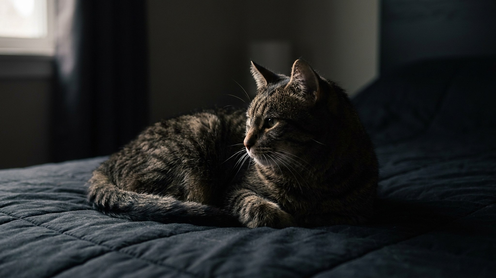

Кошка могла бы занять тёплую подушку у вашего лица, но раз за разом сворачивается именно в ногах, поверх одеяла. Это не случайность и не «второй сорт» места: за выбором стоит логика, в которой смешаны безопасность, ваше тепло и доверие с дистанцией. Разберём, что кошка этим сообщает и стоит ли переманивать её повыше.
🐾 Хотите понять, что кошка говорит вам?
Опишите ситуацию или пришлите видео в AnimaLife — AI разберёт поведение вашего питомца и подскажет, что делать. Бесплатно, ответ за минуту.
Разобрать поведение → Разобрать в MAX →
У вас iPhone? AnimaLife есть в App Store
Даже домашняя кошка во сне остаётся наполовину хищником и наполовину добычей. Ей важно не оказаться в ловушке: с краю кровати и в ногах удобнее контролировать комнату и мгновенно спрыгнуть, если что-то её встревожит.
У лица на подушке кошка оказывается «зажата» и лишена быстрого отхода. Ноги — компромисс: рядом с вами, но с открытым обзором и путём к отступлению. Для кошки это спокойное, стратегически удобное место.
Кошки ищут тепло: комфортная для них температура выше нашей, поэтому тёплое одеяло поверх ваших ног — отличная грелка. Заодно это место насыщено вашим запахом, а знакомый запах действует на кошку успокаивающе.
Есть и практичный момент: в ногах кошку не потревожат ваши повороты во сне так сильно, как у головы. Она получает и ваше тепло, и относительно стабильный, непрерывный сон. Поэтому зимой кошка нередко перебирается ближе к телу и под одеяло, а в жару, наоборот, отодвигается к краю — она просто ищет комфортную температуру.
Спать рядом с человеком кошка решается только там, где чувствует себя в безопасности, — сон самое уязвимое состояние. Выбор вашей кровати уже говорит о привязанности и доверии.
При этом ноги — это «рядом, но на своих условиях». Многие кошки так и строят отношения: близость без навязчивости. Если питомец спит в ногах, это не прохлада к вам, а комфортная для него форма быть вместе. Котята и очень привязанные кошки чаще забираются к груди или лицу, с возрастом же многие смещаются в ноги — и это нормальная смена предпочтений, а не охлаждение.
Само по себе место для сна — не повод для беспокойства. Обратить внимание стоит на резкие перемены: кошка вдруг перестала спать с вами и прячется в уединённых местах, стала беспокойной ночью или ищет непривычно тёплые точки.
Такие изменения привычек — сигнал понаблюдать внимательнее и, если они закрепляются, описать их ветеринару. Резко менять кошке её место не нужно: если хотите переманить повыше, просто положите в изголовье тёплую лежанку с вашим запахом и дайте выбрать самой.
🐾 У вашей кошки так же?
Расскажите в AnimaLife, как ведёт себя ваш питомец, — приложение объяснит причину и даст пошаговый план. Бесплатно, без записи к специалисту.
Разобрать свой случай → Разобрать в MAX →
У вас iPhone? AnimaLife есть в App Store
🐾 Понравился разбор?
Подпишитесь на канал — каждый день разбираем по одному тревожному симптому у кошек и собак: что в пределах нормы, а когда пора к врачу. Подпишитесь, чтобы не пропустить разбор, который может спасти здоровье вашего питомца.